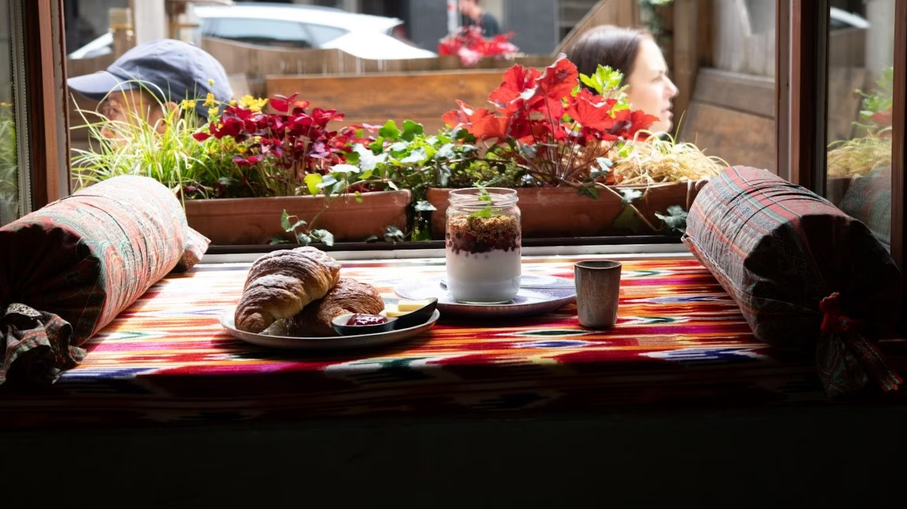

Best place to go on a lazy sunday afternoon and after a walking tour in Munich.
To be honest I've only been there during autumn and winter. Delicious cakes, mulled wine, and gingerbread are all ready and waiting, making this relaxing time of year wonderfully cozy. And while you're here, you should definitely try the cinnamon rolls. They're especially delicious here. But what's really exciting is the decor. You'd think you were in an antique shop and all the furniture had just been picked up at a flea market. Enjoy.
Back